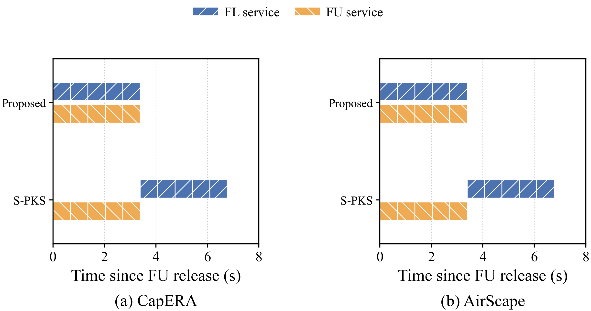
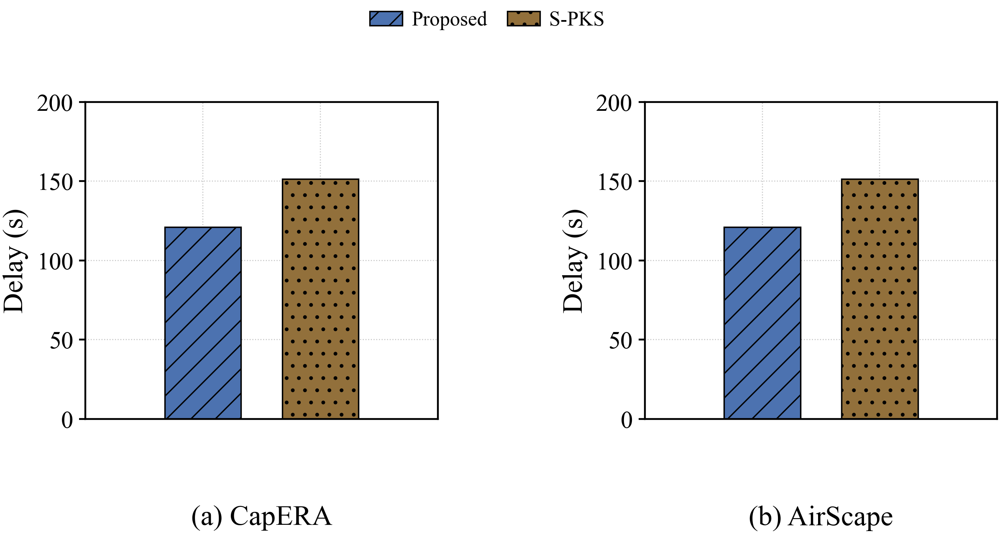
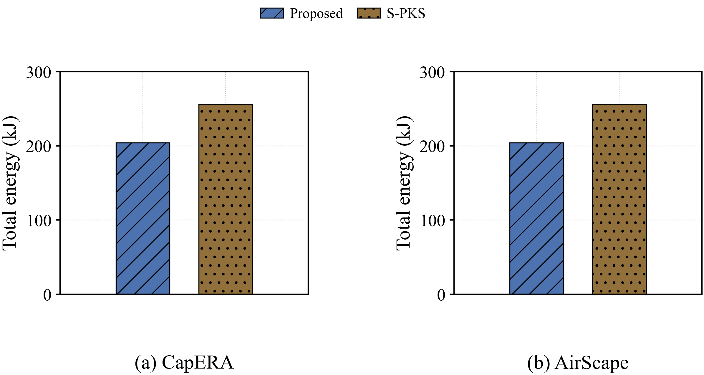
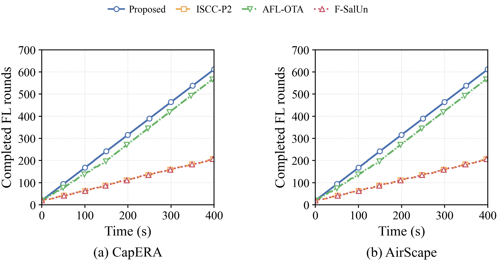
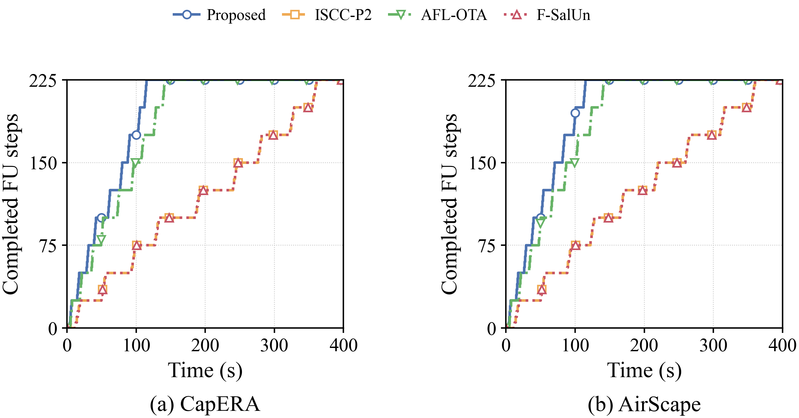

UAV/VLM learning comparisons
Parallel FL/FU co-aggregation: matched serial ablation and measured completed work. Definitions and limitations · All metrics · Previous figures
Same first release plus five FL updates: overlapping service versus immediate serial service

Delay (s): identical P-KS learning rules, parallel versus immediate serial

Total energy (kJ): identical P-KS learning rules, parallel versus immediate serial

Completed FL rounds with actual use of the shared 400-second budget

Completed FU steps with actual use of the shared 400-second budget
